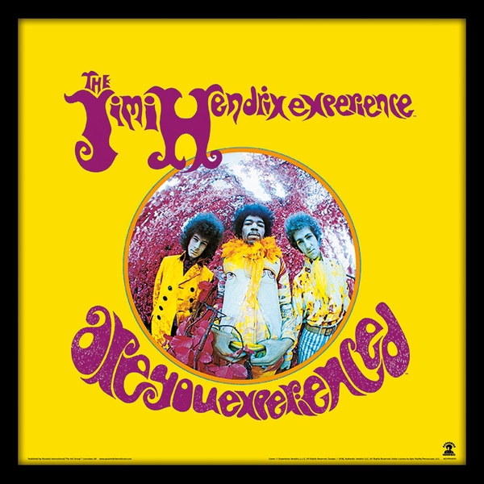

"Cuando el poder del amor sobrepase el amor al poder, el mundo conocerá la paz".
QUIÉN FUE
James Marshall Hendrix, más conocido como Jimi Hendrix, fue un guitarrista,
cantante y compositor estadounidense. A pesar de que su carrera profesional
solo duró cuatro años, es considerado uno de los guitarristas más influyentes de la historia del rock.
El Salón de la Fama del Rock and Roll lo describe como «Indiscutiblemente uno de los músicos
más grandes de la historia del rock».
BIOGRAFÍA
Hijo de James Allen Hendrix y Lucille Jeter,
su madre de origen indio, perdió la vida cuando Jimi era pequeño.
Jamás tuvo educación musical. Tanto es así que se comenta que ni siquiera sabía leer un pentagrama.
Su padre le compró una guitarra acústica de segunda mano con la que aprendería a tocar a los 11 años.
En 1961, a los 17, se alista en el ejército como paracaidista voluntario y toca por primera vez por medio dólar.
Jimi mientras estaba en el ejercito
A los 21, entra en The Flames, que actúa por los estados sureños.
Little Richard lo contrata para la gira que realizaron por toda América.
Al cabo de algún tiempo, lo expulsan al negarse a ponerse el uniforme para actuar.
Posteriormente toca con Ike & Tina Turner. Se traslada a la ciudad de Nueva York.
Trabaja y graba con los Isley Brothers.
En 1965 todavía permanecía en esta ciudad y estaba sin guitarra,
Curtis Knight le ofreció una, además de presentarle a su manager mediante el cual logra grabar.
Empiezan sus experiencias con el ácido.
Se instala en Greenwich Village y en un club lo ve Miles Davis,
quien manifiesta haber visto un genio.
Jimi Hendrix dando un paseo por Greenwich Village
En 1966 se marcha a Londres. Es contratado por Polydor tras ser rechazado por Decca. Graba "Hey Joe",
su primer single en marzo de 1967, para lo cual tiene que empeñar su guitarra.
Actúa como telonero de Warkers Brothers.
Con Noel redding al bajo y Mitch Michell a la batería formó
The Jimi Hendrix Experience grupo con el cual grabó sus tres fabulosos discos Are you experienced,
Axis Bold as Love y Electric Ladyland.
Regresa a los clubes, pero no por mucho tiempo,
ya que consigue actuaciones en el Teatro Saville,
propiedad del productor de The Beatles Brian Epstein,
con The Who como cabeza de cartel.
Lanza "The Wind Cries Mary", su tercer single que incluía en exclusiva el tema "Can you see me".

Portada del disco "Are You Experienced?"
Muere Epstein (agosto del 67) y se ve obligado a suspender la segunda parte de su show en el Teatro Saville.
Durante su memorable actuación en el Festival de Monterrey,
en 1967, quemó su Fender Stratocaster como muestra de agradecimiento a su público;
una ceremonia que repitió en varias presentaciones.
En los primeros meses de 1968 inicia su gira por Estados Unidos.
En Toronto lo detienen en el aeropuerto con heroína. Es procesado y absuelto.
Toca en el festival de Newport y Woodstock,
a la par que desembolsa medio millón de dólares para sus Electric Layland Estudios.
Regresa a New York, donde inaugura sus estudios oficialmente el 15 de Agosto,
aunque al día siguiente tiene que volar al festival de Isla de Wight,
su último gran concierto en vida.
Jimi Hendrix actuando en el Festival de Woodstock
La muerte sorprendió a Hendrix el 18 de septiembre de 1970.
Estaba en el departamento de su novia, Monika Danneman, en Notting Hill, Londres.
Había ingerido una mezcla de somníferos con alcohol y al parecer murió por aspirar su propio vómito.
Fue trasladado de urgencia al hospital de esa ciudad y a los pocos minutos de haber llegado
los médicos anunciaron su fallecimiento.
Fue enterrado en Seattle el 1 de octubre.